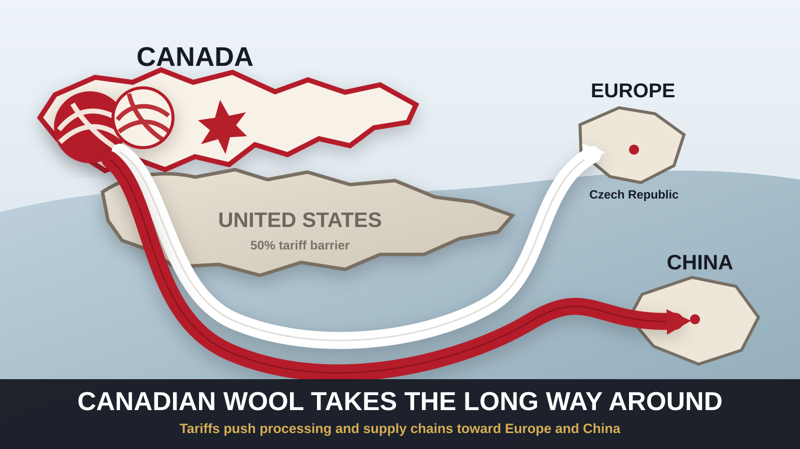

CANADIAN WOOL TAKES THE LONG WAY AROUND AMERICA
A 50-per-cent U.S. tariff has made an old cross-border wool-processing route much harder to justify. Canadian producers are sending raw fibre to China and the Czech Republic instead — while the industry asks why more of the work cannot be done at home.
OTTAWA — One of the clearest pictures yet of Canada’s attempt to reduce its dependence on the United States is not an oil tanker, an auto plant or a new trade mission. It is a bale of wool.
Canadian wool producers have traditionally depended on American facilities for part of the work that turns freshly shorn fleece into usable fibre. But U.S. tariffs are changing the arithmetic. The Canadian Press reported Saturday that more producers are sending raw wool to China and the Czech Republic as cross-border processing becomes more expensive and uncertain.
The issue begins with what the industry calls greasy wool: fleece straight from the sheep, before it has been thoroughly cleaned. Industrial scouring removes dirt and vegetation as well as lanolin, leaving fibre ready for later stages of production. Canada has mills, but far less large-scale processing capacity than the United States.
The short route south is no longer necessarily the cheap route
The Trump administration imposed additional 50-per-cent duties on selected Canadian goods under Section 338 of the U.S. Tariff Act of 1930. Canadian Press reporting says greasy wool and some finished wool products are among the products caught by the tariff measures.
That changes a supply chain built on geography. Sending Canadian fleece south for scouring once made obvious sense: the market was close, the infrastructure already existed and the border linked farms, processors, wholesalers and retailers that had dealt with one another for years.
Now the detour can be cheaper than the shortcut.
Matthew Rowe, chair of the Canadian Wool Council, told The Canadian Press that producers relying on cross-border processing can no longer assume the old arrangement works economically. The U.S. has also been the largest single market for Canadian wool, making the disruption a problem on both the processing and sales sides.
Analysis: This is what trade diversification looks like before it becomes a slogan on a government slide deck. It is not simply finding a new buyer. It can mean rebuilding several links in a chain at once — processor, shipper, supplier, retailer and customer — and sometimes moving a product thousands of kilometres farther than before.
Retailers are looking north and east
At Wabi Sabi, an Ottawa yarn shop, owner Judy Enright Smith told The Canadian Press she is looking for more Canadian wool and European products and is prepared to say no to a long-time American supplier. Her decision mixes economics with a broader Canadian consumer reaction to the trade fight.
There are domestic examples of what a less U.S.-dependent system can look like. New Brunswick’s Briggs and Little, founded in 1857, buys Canadian wool and carries out its manufacturing in Canada. That shelters it from much of the cross-border processing problem, although the company still relies on some American-made machinery parts and materials.
In Manitoba, shepherd and mill owner Anna Hunter has argued for more regional processing capacity so different types of Canadian wool can be cleaned and manufactured closer to where they are produced. Her proposal points to the other side of diversification: foreign alternatives can keep trade moving now, but domestic capacity can reduce the need for detours later.
A small industry, a much larger pattern
Wool is not one of Canada’s biggest exports. That is precisely why the story is useful. The same pressure showing up in steel, autos, energy and agriculture is reaching a relatively small rural industry whose supply chain was built around the assumption that the U.S. border would remain predictable.
Export Development Canada’s latest Trade Confidence Index, released this week, found 72 per cent of Canadian exporters plan to pursue new markets over the next two years, up from 65 per cent five months earlier. Nearly a third reported weaker U.S. orders during the previous six months. Nineteen per cent said they were responding by expanding into new export markets.
The wool route is a literal version of those numbers. Fibre that might once have travelled a few hundred kilometres south can now travel across an ocean for processing. Retail shelves that once leaned on American brands are being reconsidered. Producers are again discussing whether Canada should rebuild industrial capacity that decades of North American integration made seem unnecessary.
None of that makes the transition painless. Longer routes can add shipping time, financing costs and exposure to new risks. Replacing U.S. suppliers does not automatically make a business more efficient. And building Canadian mill capacity takes capital, equipment and skilled workers.
But a supply chain can acquire a memory. Once a producer has found a processor in Europe or Asia, once a retailer has found a Canadian substitute, and once a customer has learned to look for a different label, restoring the old commercial relationship is no longer just a matter of removing a tariff.
Analysis: That may be the most consequential part of the wool story. The tariffs are not merely collecting money at a border. They are teaching Canadian businesses how to route around it.
The Canadian Press via Global News — Canadian wool and yarn producers look to untangle themselves from the U.S., Sept. 5, 2026
Office of the U.S. Trade Representative — statement on Section 338 tariffs on Canada
Export Development Canada — Trade Confidence Index, Sept. 3, 2026